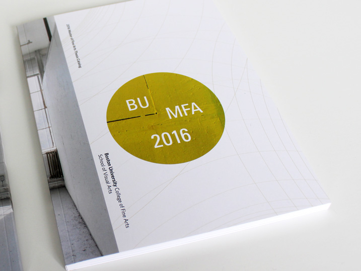

BU College of Fine Arts
2016 MFA Exhibitions Catalog
Digitally printed, 7.5x10in
When the BU College of Fine Arts marketing team asked me to design the catalog for their 2016 MFA thesis exhibitions, the challenge was to elevate all the different pieces while picking a theme that would somehow tie together the painting, sculpture, and graphic design exhibitions. I’d have to shape the content without overshadowing it.
For this project, I had to collect almost 100 images, as well as artist statements, and interviews. I again started to look for patterns. By reading each of the statements, I found that several artists spoke about their work as part of a “dialogue.” So by shifting vertical alignment on the pages, I wanted to pull the viewer’s eye back and forth within spreads to emulate that feeling. I lastly added color as a tool both to emphasize this conversational quality and to distinguish between departments.
I was awarded an in-house design award for this project by Graphic Design USA.
